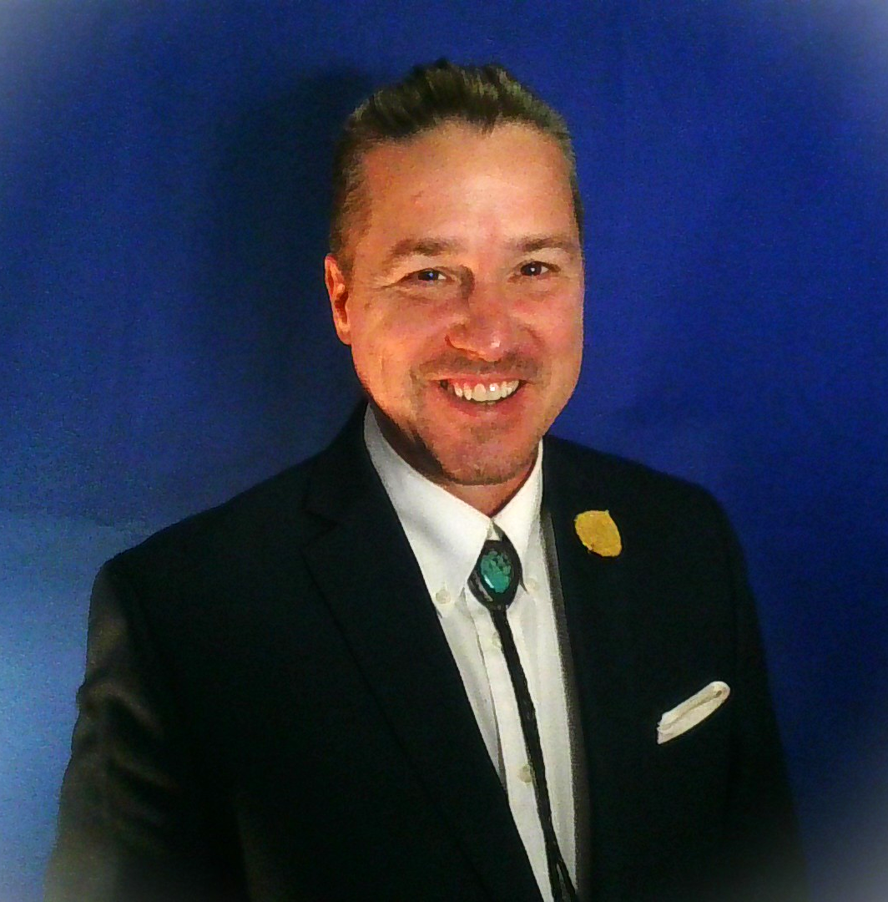

Co-Host
Meliorist · Advisor · Trainer · San Francisco
Who He Is

Most of his clients don't need more strategy. They need less noise — and someone in the room who can tell the difference between the two. Brian is good at finding the signal.
His advisory work starts with a question most consultants skip: what's the framework already working in this business? Not the framework Brian brings in — the one the owner has already built, without naming it. Once it's named, it can be used deliberately. That's where real growth begins.
Brian is the founder of Meliorist Group and the developer of Meliorism 2.0 — a philosophy rooted in the tradition that the world can be made better through human effort, with one practical addition: subtract before you add. The better version of a person, a business, or a relationship is already present. The work is clearing what conceals it.
He is based in San Francisco and works with a small number of business owners, trainers, and leaders at any given time. He is selective about who he works with — not because of gatekeeping, but because the work requires genuine readiness on both sides.
The Work
Advisory Work
Brian works with business owners on a growth-participation model — a retainer against a share of the profit increase. The incentive is alignment: Brian only wins when the client wins. Typically suited for owners moving from $100K to $200K in profit and beyond.
Group Training
CTCSP is the weekly training program Brian co-hosts with Scott Sylvan Bell. It's designed for business owners who want a serious room and real implementation — not inspiration or worksheets.
Facilitation
Brian facilitates strategic sessions, team alignment work, and presentation development. He's skilled at finding the conversation underneath the conversation — the thing that actually needs to be said before anything else can move.
Writing
Brian writes on Meliorism, human agency, and what it means to build a good life and a good business in the current era. His newsletter, Meditations on Meliorism, publishes at Substack. Meliorism 2.0 is his daily briefing for trainers and educators.
The Philosophy
Meliorism is the belief that the world can be made better through human effort. Not guaranteed to improve — made better, through the deliberate choices of people who believe their actions matter.
Meliorism 2.0 adds a practical principle: subtract before you add. Most systems, businesses, and lives aren't struggling because they need more — they're struggling because something is obscuring what's already working. Remove the friction, the confusion, the misaligned structure. What remains is usually enough to build from.
This isn't pessimism. It's the most optimistic claim Brian knows: the better version is already here. The work is clearing what hides it.
Read more on Meliorism 2.0 →Find Brian
Join the Monday sessions at ctcsp.com — or reach out directly at explore@brianoney.com.
See the Program →